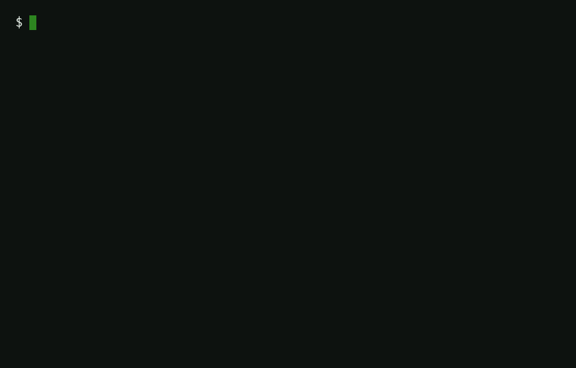

Razer Wolverine V2 Chroma lighting for Linux
Hijack the hues, bub.
Set the colours, effects, and brightness on your Razer Wolverine V2 Chroma straight from Linux. Give each side of the controller its own colour without booting Windows.
Free and open source. Linux only. No background daemon, account, or Windows software required.

Built for Linux
Two light strips.
Zero fuss.
Razer's official lighting software is Windows-only. hue-jackman brings full Chroma lighting control to Linux in one fast command-line tool that stays out of your way.
- Independent left and right colours
- Paint the left and right strips separately with any six-digit hex colour. Match team colours, player slots, or the rest of your desk.
- Keeps your controller working
- Applies your colours in an instant and hands the gamepad straight back to Linux, so your games keep working with no replug or custom driver.
- Lightweight with no daemon
- Nothing runs in the background and no account is needed. Run a single command, enjoy your lighting, and get back to playing.
Lighting modes
Pick a look in one command
Mix two colours across the strips, pick one solid shade, switch on an animated effect, or dim the lights for late-night play.
-
hue-jackman rgb segmentsSplit colours
Give the left and right light strips two different colours, such as red and blue.
-
hue-jackman rgb staticSolid colour
Set both strips to Razer green or any six-digit hex colour you like.
-
hue-jackman rgb breatheAnimated effects
Fade smoothly between one or two colours with
breathe, or cycle withspectrum. -
hue-jackman brightnessBrightness and off
Dial brightness from
0to255, or turn both strips off withrgb off.
Run hue-jackman on its own to check your connected controller, or pass --help to see every option.
Quick setup
Up and running in a minute
Install the package for your Linux distribution, plug in your Wolverine V2 Chroma, and run your first colour command.
-
Install a package
Choose your distribution in the install section below to get automatic updates.
-
Allow non-root access
Add the optional one-line rule below once so you never need
sudoto change colours. -
Set your colours
Run
hue-jackman rgb static 44D62Cand watch both strips light up.
Optional: run without sudo
Save this line to /etc/udev/rules.d/99-hue-jackman.rules, then reload rules with sudo udevadm control --reload-rules && sudo udevadm trigger.
SUBSYSTEM=="usb", ATTR{idVendor}=="1532", ATTR{idProduct}=="0a2e", TAG+="uaccess"
Looking for USB protocol details or developer commands? Read the README on GitHub .
Install
Get hue-jackman on Linux
Choose your distribution. Each repository is signed and keeps hue-jackman up to date.
-
 Linux
Debian and Ubuntu
apt.wimpys.world
Linux
Debian and Ubuntu
apt.wimpys.world
-
 Linux
Fedora and openSUSE
rpm.wimpys.world
Linux
Fedora and openSUSE
rpm.wimpys.world
-
 Linux
Arch Linux
pkg.wimpys.world
Linux
Arch Linux
pkg.wimpys.world
-
 Linux
Alpine Linux
apk.wimpys.world
Linux
Alpine Linux
apk.wimpys.world
-
 Nix
Nix and NixOS
nix.wimpys.world
Nix
Nix and NixOS
nix.wimpys.world
-
Any Linux bin
bin install github.com/wimpysworld/hue-jackman
Want to run hue-jackman without sudo? Add the optional quick setup rule above once.